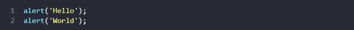
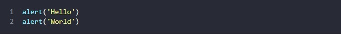
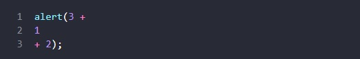
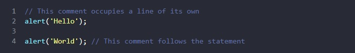
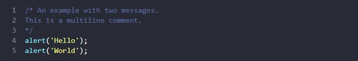

JS Tutorial
Code structure

Statements
Statements are syntax constructs and commands that perform actions. We’ve already seen a statement, alert('Hello, world!'), which shows the message “Hello, world!”. We can have as many statements in our code as we want. Statements can be separated with a semicolon. For example, here we split “Hello World” into two alerts:
Usually, statements are written on separate lines to make the code more readable:
Semicolons
A semicolon may be omitted in most cases when a line break exists.
This would also work:
Here, JavaScript interprets the line break as an “implicit” semicolon. This is called an automatic semicolon insertion.
In most cases, a newline implies a semicolon. But “in most cases” does not mean “always”!
There are cases when a newline does not mean a semicolon. For example: We recommend putting semicolons between statements even if they are separated by newlines. This rule is widely adopted by the community. Let’s note once again – it is possible to leave out semicolons most of the time. But it’s safer – especially for a beginner – to use them.
Comments
As time goes on, programs become more and more complex. It becomes necessary to add comments which describe what the code does and why.
Comments can be put into any place of a script. They don’t affect its execution because the engine simply ignores them.
One-line comments start with two forward slash characters //.
The rest of the line is a comment. It may occupy a full line of its own or follow a statement.
Like here:
Multiline comments start with a forward slash and an asterisk /* and end with an asterisk and a forward slash */.
